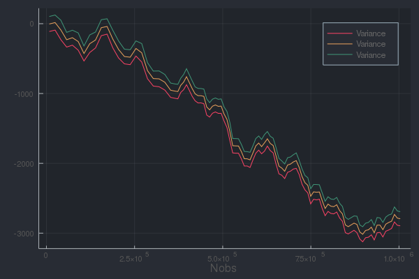

Plots
Each of the following examples are plotting one million data points, a typically difficult task.
Many Stats Can Be Plotted via Plot Recipes
s = fit!(Series(KHist(25), Hist(-5:.2:5)), randn(10^6))
plot(s)
Naive Bayes Classifier
The NBClassifier type stores conditional histograms of the predictor variables, allowing you to plot approximate "group by" distributions:
# make data
x = randn(10^6, 5)
y = x * [1,3,5,7,9] .> 0
o = NBClassifier(5, Bool) # 5 predictors with Boolean categories
fit!(o, zip(eachrow(x), y))
plot(o)
Mosaic Plots
The Mosaic type allows you to plot the relationship between two categorical variables. It is typically more useful than a bar plot, as class probabilities are given by the horizontal widths.
x = rand([true, true, false], 10^6)
y = map(xi -> xi ? rand(1:3) : rand(1:4), x)
o = fit!(Mosaic(Bool, Int), eachrow([x y]))
plot(o)
savefig("mosaic.png"); nothing # hide
Partitions
The Partition type summarizes sections of a data stream using any OnlineStat, and is therefore extremely useful in visualizing huge datasets, as summaries are plotted rather than every single observation.
Continuous Data
y = cumsum(randn(10^6)) + 100randn(10^6)
o = Partition(KHist(10))
fit!(o, y)
plot(o, xlab = "Nobs")
o = Partition(Mean())
o2 = Partition(Extrema())
s = Series(o, o2)
fit!(s, y)
plot(s, layout = 1, xlab = "Nobs")
Plot a custom function of the OnlineStats (default is value)
Plot of mean +/- standard deviation:
o = Partition(Variance())
fit!(o, y)
plot(o, x -> [mean(x) - std(x), mean(x), mean(x) + std(x)], xlab = "Nobs")
Categorical Data
y = rand(["a", "a", "b", "c"], 10^6)
o = Partition(CountMap(String), 75)
fit!(o, y)
plot(o, xlab = "Nobs")
Indexed Partitions
The Partition type can only track the number of observations in the x-axis. If you wish to plot one variable against another, you can use an IndexedPartition.
x = randn(10^6)
y = x + randn(10^6)
o = fit!(IndexedPartition(Float64, KHist(40), 40), eachrow([x y]))
plot(o, ylab = "Y", xlab = "X")
x = rand('a':'z', 10^6)
y = 5sin.(Float64.(x)) + Float64.(x) + randn(10^6)
o = fit!(IndexedPartition(Char, Extrema()), eachrow([x y]))
plot(o, xlab = "Category")
x = rand(10^6)
y = rand(1:5, 10^6)
o = fit!(IndexedPartition(Float64, CountMap(Int)), zip(x,y))
plot(o, xlab = "X", ylab = "Y")
x = rand(1:1000, 10^6)
y = x .+ 30randn(10^6)
o = fit!(IndexedPartition(Int, KHist(20)), zip(x,y))
plot(o)